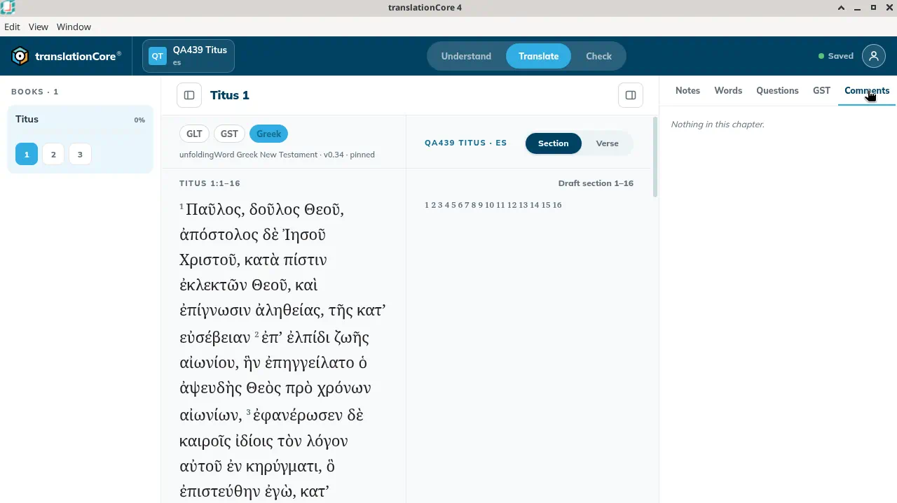
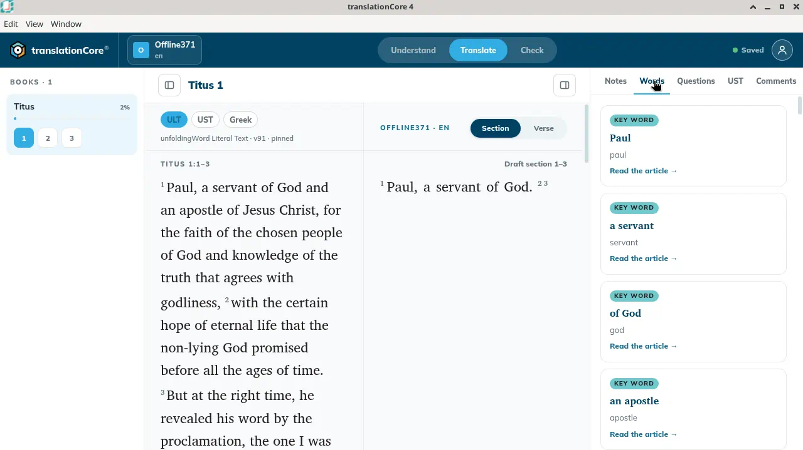
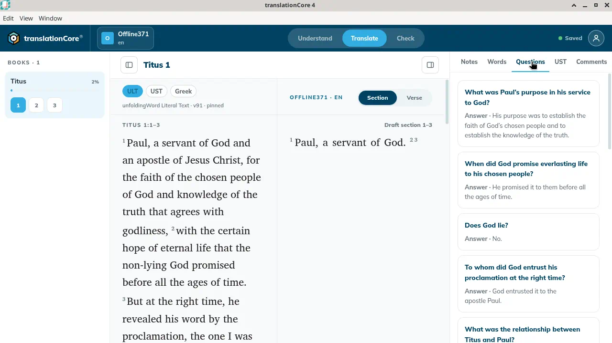
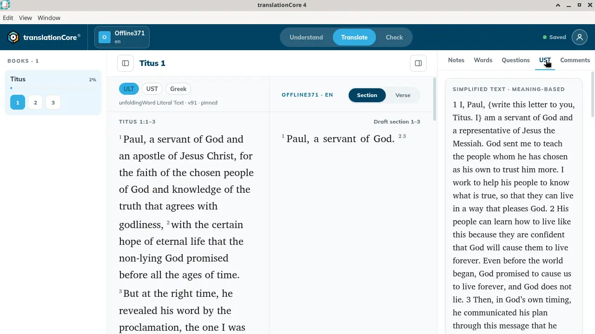
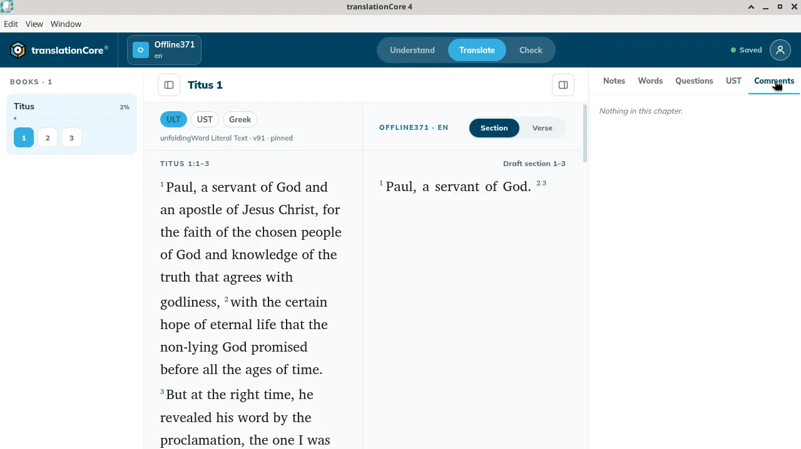

The helps panel in Translate
While you draft, the helps panel shows the notes, word links, questions, simplified text and your own comments for the verses in focus.
Where in the app: Translate › right side panel — tabs Notes · Words · Questions · GST · Comments (an English gateway shows UST instead of GST)
What it is
The helps panel puts the translation helps next to your draft:
- Notes — translation notes, with links to Translation Academy articles.
- Words — Translation Words links for key terms, with "Read the article →".
- Questions — translation questions with their answers, to test your draft's meaning.
- GST — the simplified text of the chapter. An English gateway labels this tab UST.
- Comments — the user comments you wrote in Understand (only in Translate).
When to use it
While you draft, to check what a phrase means or how a key term is defined.
Step by step
- In Translate, if the panel is hidden, click Toggle helps panel at the top right.
- Click a tab: Notes, Words, Questions, GST or Comments.
- Open a section or verse editor: the panel narrows to the verses you are editing.
- Point at a card to highlight its words in the source column; click it to keep the highlight.
What you should see
- The panel has the tabs Notes, Words, Questions, GST, and Comments. With no comment written, Comments says "Nothing in this chapter."
- While a section or verse editor is open, the panel shows only the helps for those verses.
Screenshots

Screenshot comingTranslate on Sample Titus 1, Comments tab selected. It says Nothing in this chapter.
img/tr-helps-panel-1.png
Screenshot comingSample English Translate, Words tab. Key-word cards: Paul, a servant, of God, an apostle. Each says Read the article. No article opened.
img/tr-helps-panel-2.png
Screenshot comingSample English Translate, Questions tab. First question: What was Paul's purpose in his service to God? Answer line visible.
img/tr-helps-panel-3.png
Screenshot comingSample English Translate, UST tab. Heading Simplified text · meaning-based. Verse 1 contains curly braces.
img/tr-helps-panel-4.png
Screenshot comingSample English Translate, Comments tab. It says Nothing in this chapter. Panel returned to Notes.
img/tr-helps-panel-5.pngTips
- Long notes show Show more / Show less.
- On Sample English the English tabs are Notes, Words, Questions, UST and Comments. Words for Titus 1:1–3 starts with Paul, a servant, of God and an apostle. Each card says Key word and Read the article →. Questions starts with "What was Paul's purpose in his service to God?" and also shows "What was the relationship between Titus and Paul?" The UST tab heading is "Simplified text · meaning-based", and verse 1 contains curly braces. Comments says "Nothing in this chapter." The panel was put back on Notes.
- Each help tab is explained in the Understand section.
- Known issue: The Comments tab labels a comment written on a section with the section's first verse, for example "VERSE 1" for a comment on the section 1–3.
Known limits
- The panel cannot be widened yet (issue #234).
- The Translation Academy tab was removed from the panel in alpha.6; open articles from a note's Translation Academy → link instead.